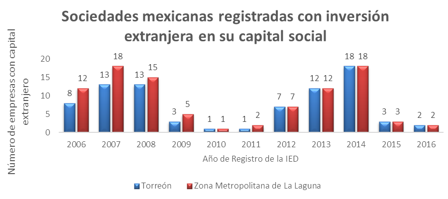
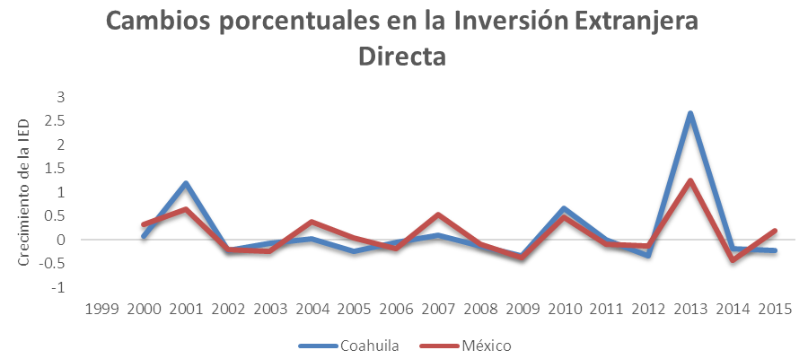
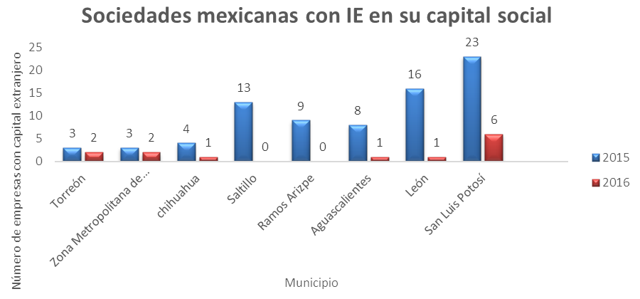

De acuerdo con el Registro Nacional de Inversión Extranjera (RNIE), de 2014 a la fecha en el Municipio de Torreón, Coahuila; se han registrado 23 empresas con participación extranjera en su capital social. El capital de estas sociedades proviene de los países de Japón, Reino Unido, Países Bajos, España, Canadá, Estados Unidos, Corea del Sur y Corea del Norte.
Las inversiones se ubican en los sectores de: Servicios inmobiliarios y de alquiler de bienes muebles e intangibles; Minería; Generación, transmisión y distribución de energía eléctrica; Suministro de agua y de gas por ductos al consumidor final; Comercio al por mayor y Fabricación de equipo de transporte.
Del total de las empresas mencionadas, 18 se registraron en 2014, que ha sido el mejor año para el municipio de Torreón en cuestión de inversión extranjera directa (IED) desde 2007. En contraste, durante el 2015 sólo tres empresas en el municipio contaron con capital extranjero y dos más se registraron en lo que va de 2016.
Para la Zona Metropolitana de La Laguna, la cifra es también de 23, pues desde el año 2012 Torreón ha sido el único municipio de la región en percibir este tipo de inversión.
Se considera Inversión Extranjera Directa a "la inversión transfronteriza que realiza un residente en el extranjero en una empresa mexicana o en activos ubicados en territorio nacional, con el objetivo de establecer un interés duradero", de acuerdo con el Fondo Monetario Internacional (FMI) y la Organización para la Cooperación y Desarrollo Económico (OCDE).
La IED, a diferencia de la inversión extranjera indirecta o de portafolios en donde el inversionista sólo espera recibir un rendimiento, es una inversión a largo plazo en la planta productiva. Es por esto que su importancia no reside únicamente en su monto, al contrario, los beneficios pueden ser tantos que hay quien considera la inversión un factor secundario.
La IED crea empleos, permite la trasmisión de tecnología, incentiva la competencia, capacita la mano de obra local, mejora la calidad de los productos e implementa mejores prácticas administrativas y operativas en las empresas. Además, la IED tiende a ser más estable en los tiempos de crisis.
Más llegada de empresas
Sumado a la inversión extranjera, nuevas empresas con capital nacional se han instalado en Torreón y Matamoros recientemente, con una inversión total de 282.9 millones de dólares, que generará alrededor de 9,600 empleos, principalmente en los sectores automotriz y metalmecánica.
México es uno de los principales países receptores de IED: en el reporte de la Conferencia de las Naciones Unidas sobre Comercio y Desarrollo publicado en 2014, nuestro país ocupó el lugar 13 en captación de IED en el mundo, al captar 1.9% de la IED a nivel global.
Además, para las empresas internacionales es la novena economía más atractiva para invertir capital extranjero. Los principales países de origen de la IED de nuestro país son Estados Unidos, con el 45% de la IED total, España con el 12% y Países Bajos con otro 12%.
Canadá, Bélgica y Alemania también contribuyen con porcentajes significativos en IED. El 67% de la inversión va dirigida a la industria manufacturera y 17% a los servicios financieros, el resto de los sectores compite por el 16% restante.
Tanto a nivel estatal como nacional, el salto en inversión extranjera fue en el 2013, año en el que el monto de IED se duplicó en México y se triplicó en el Estado de Coahuila, pasando de 439.4 millones de dólares (mdd) a 1,608.50.
Durante el primer trimestre de 2016 Coahuila percibió el 1.5% de la IED total de México, por un monto de 121.9 mdd. Y en el acumulado desde 1999 a 2016, ocupa el décimo lugar entre los estados al captar el 3.1% de la IED nacional durante el mismo periodo.
En definitiva Torreón mejoró su captación de IED, sin embargo, comparado con otros municipios similares, sigue teniendo un rezago. En 2015 San Luis Potosí, León y Saltillo se registraron 23, 16 y 13 empresas con participación extranjera, mientras que en Torreón sólo se registraron tres.
Si se desea seguir captando la atención de los inversionistas extranjeros hacia nuestra ciudad, se requieren políticas adicionales a los incentivos fiscales, por ejemplo: trabajar en la mejora de los indicadores doing business (costos de los permisos de construcción, días para abrir un negocio, número de trámites, etc.), mejorar el ambiente para las inversiones, capacitar la mano obra y crear un ambiente de mayor seguridad en la ciudad: todos indicadores de competitividad con importancia para los inversionistas.
Apertura de empresas con capital nacional e internacional
| Empresa Proyecto | Origen | Giro | Empleos | Inversión MDD | Año |
|---|---|---|---|---|---|
| Parque Solar Torreón | España | Energético | 30 | 46.1 | 2014 |
| Sumitomo Torreón | Japón | Servicios | 300 | 25.0 | 2013 |
| Toyota | Japón | Automotriz | 700 | 12.3 | 2013 |
| Henniges | Alemania | Automotriz | 800 | 14.0 | 2012 |
| HEB Torreón | México | Comercio | 200 | 10.0 | 2014 |
| Futurama-8 Torreón | México | Comercio | 100 | 3.4 | 2012 |
| Futurama-7 Torreón | México | Comercio | 100 | 3.2 | 2012 |
| Evolucione | Mexico | Tecnología | 300 | 1.1 | 2014 |
| Bioscience & Technology | Mexico | Biotecnología | 150 | 2.8 | 2014 |
| Yura | Corea | Automotriz | 4000 | 53.0 | 2014 |
| Perfiles Tubulares | México | Metal mecánica | 100 | 7.8 | 2014 |
| Exa Industries | Mexico | Metal mecánica | 350 | 8.0 | 2014 |
| Tecmur | México | Fundición | 100 | 3.0 | 2012 |
| Takata Torreón | Japón | Automotriz | 402 | 2.7 | 2013 |
| Exa Industrial | Mexico | Metal mecánica | 400 | 2.5 | 2015 |
| Circul K | México | Comercio | 900 | 18.0 | 2015 |
| Parque Eólico de Peñoles | ND | ND | ND | ND | 2016 |
| Hyosung | Corea | Automotriz | 700 | 70.0 | 2016 |


